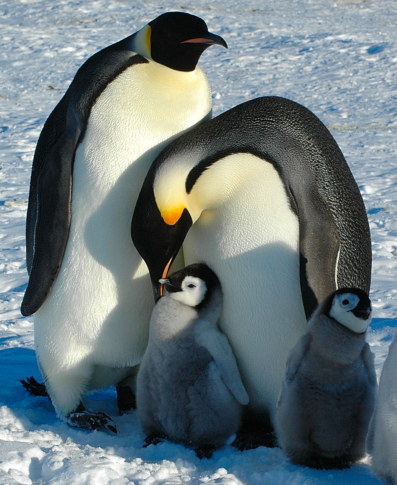
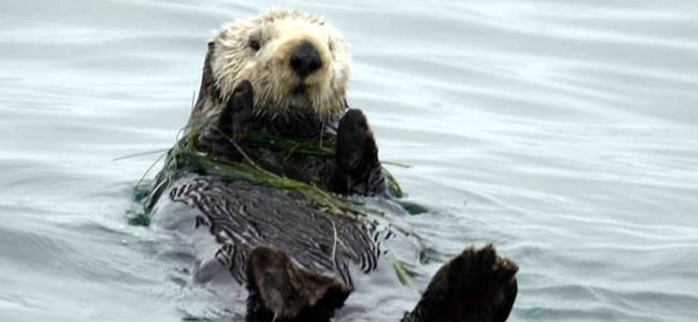

====this is a teaching website====
Anthony Rufin
Home
Page1
Page2
Page3
Page4
I have been doing more exercise lately
I plan to start searching for jobs soon
I am rather fond of penguins
Sea otters are also great animals as well

